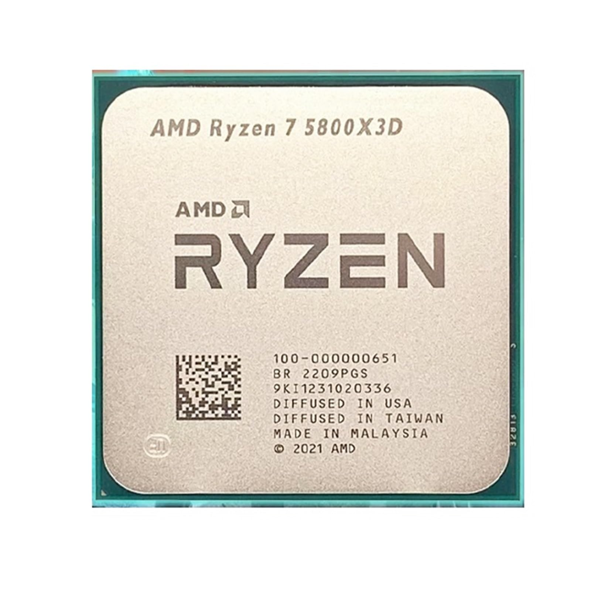
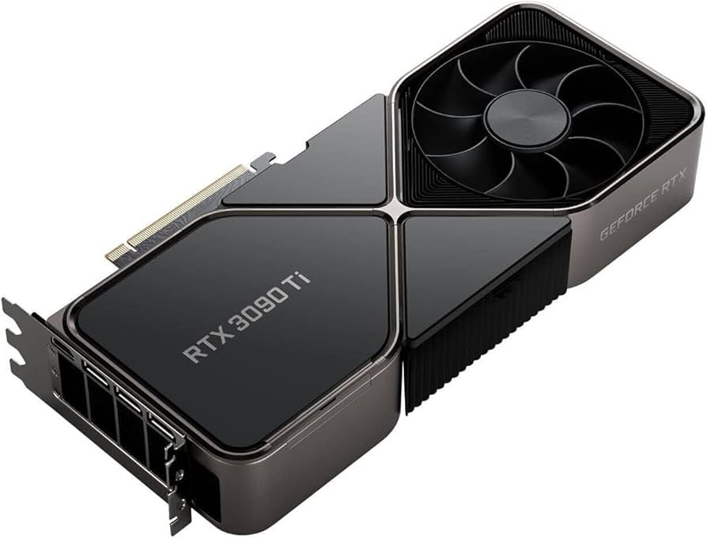

Componentes Externos e Internos para Computadoras
Las computadoras modernas tienen una variedad de componentes que permiten un rendimiento increíble. A continuación, exploramos los más relevantes.
Componentes Internos
Los componentes internos son esenciales para el rendimiento de una computadora. Los más importantes incluyen el procesador (CPU), la tarjeta gráfica (GPU), la memoria RAM y el almacenamiento (SSD/HDD).
Procesador (CPU)

Los procesadores como el AMD Ryzen 5800X y el Intel Core i9-12900K ofrecen un rendimiento sobresaliente, especialmente en tareas multitarea y juegos de alta demanda.
Tarjeta Gráfica (GPU)

Las tarjetas gráficas como la NVIDIA RTX 3090 permiten juegos y creación de contenido en resolución 4K, además de soportar tecnologías como Ray Tracing.
Memoria RAM
La memoria RAM es crucial para el rendimiento general del sistema. Los módulos de 16GB o 32GB son ideales para juegos y trabajo profesional en la mayoría de las configuraciones actuales.
Componentes Externos
Los periféricos externos, como monitores, teclados y ratones, también son esenciales para una experiencia de usuario completa.
Monitores

Los monitores de 144Hz o 240Hz son ideales para juegos competitivos, mientras que los monitores 4K proporcionan una experiencia visual increíble para creadores de contenido y gamers.
Teclados y Ratones
Los teclados mecánicos y los ratones con sensores de alta precisión son muy populares entre los gamers por su capacidad de respuesta y comodidad durante largas sesiones de juego.